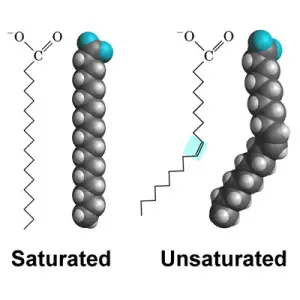
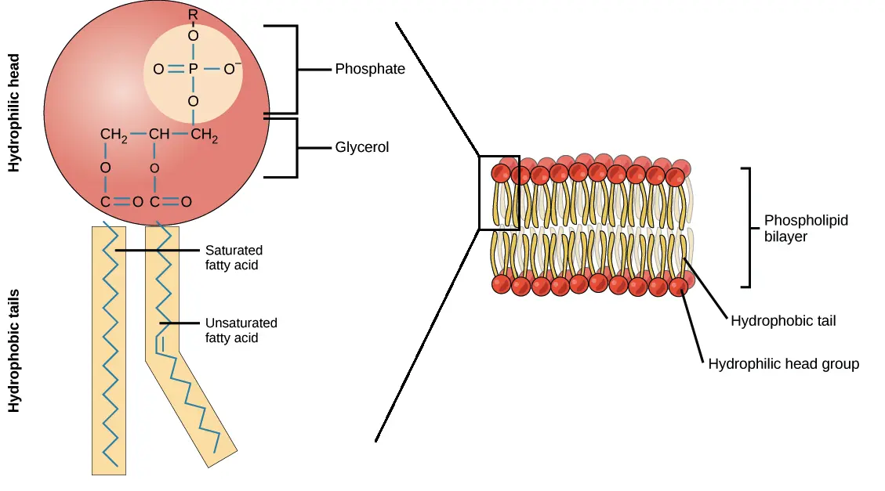
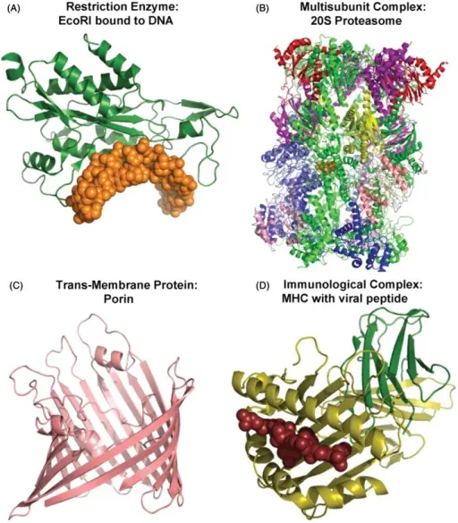
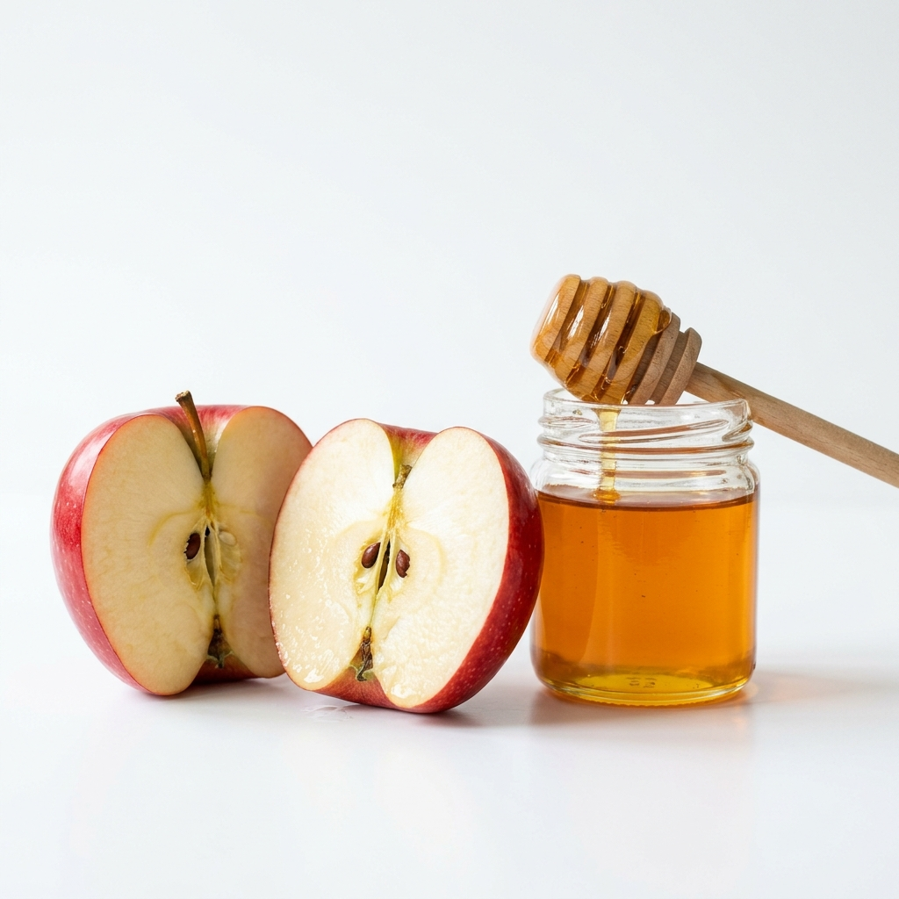
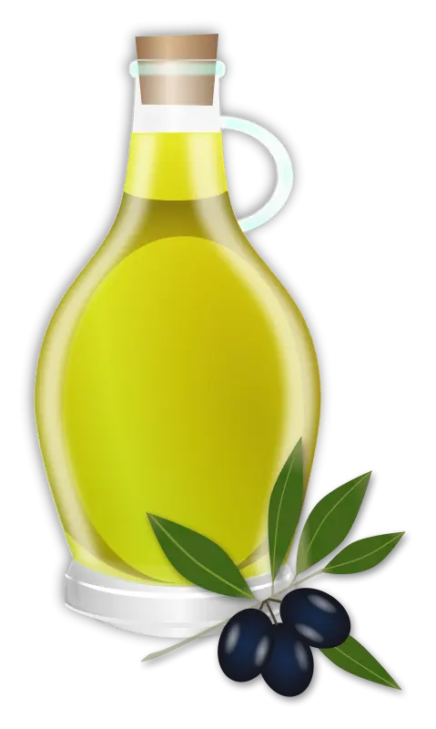
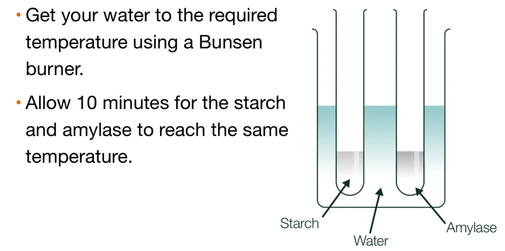

What you need to know (Edexcel IGCSE specification 2.7–2.13)
- 2.7identify the chemical elements present in carbohydrates, proteins and lipids (fats and oils)
- 2.8describe the structure of carbohydrates, proteins and lipids as large molecules made up from smaller basic units: starch and glycogen from simple sugars, protein from amino acids, and lipid from fatty acids and glycerol
- 2.9practical: investigate food samples for the presence of glucose, starch, protein and fat
- 2.10understand the role of enzymes as biological catalysts in metabolic reactions
- 2.11understand how temperature changes can affect enzyme function, including changes to the shape of active site
- 2.12practical: investigate how enzyme activity can be affected by changes in temperature
- 2.13understand how enzyme function can be affected by changes in pH altering the active site
Elements & building blocks 2.72.8
Biological molecules are the chemical building blocks of cells and tissues. We take them in through our diet so our cells can grow, repair, release energy and stay healthy.
The three main groups are carbohydrates, lipids (fats and oils) and proteins.

Which chemical elements are they made of?
Small units → big molecules
Carbohydrates (starch, glycogen) are made from simple sugars · Proteins are made from amino acids · Lipids are made from 1 glycerol + 3 fatty acids.
Quick check
0 / 2 doneCarbohydrates 2.8
The name itself tells you the elements: carbo (carbon) – hydr (hydrogen) – ate (oxygen).
- Used in respiration to release energy.
- Simple sugars (like glucose) are small and soluble; complex carbohydrates (like starch) are huge, insoluble chains of glucose that must be broken down by enzymes before absorption.
- Plants store carbohydrate as starch (e.g. potatoes, rice, pasta) and use cellulose for cell walls. Animals store it as glycogen (in liver and muscles).


Beyond IGCSE Other structural carbohydrates in nature (chitin & peptidoglycan)
Plants aren't the only organisms using polysaccharides for armour: fungi and insect/crab shells use chitin (a carbohydrate containing nitrogen), and bacterial cell walls are made of peptidoglycan. Click any image to enlarge:


Quick check
0 / 1 doneLipids & proteins 2.8
Lipids (fats & oils)
- Made of C, H and O.
- Structure: 1 glycerol + 3 fatty acids.
- Roles: long-term energy store, thermal insulation, protecting organs, making cell membranes.
- Foods: butter, cheese, meat, oily fish (animal); olive oil, sunflower oil, nuts (plant).

Proteins
- Made of C, H, O, N (and sometimes S).
- Structure: long chains of amino acids (20 different kinds) folded into a specific 3D shape.
- Roles: growth and repair of tissues, enzymes, antibodies, haemoglobin.
- Foods: meat, fish, eggs, cheese, beans, peas, nuts.

Beyond IGCSE Explore saturated vs unsaturated fats & 3D protein structures




 InteractiveMolecular machinery: explore the proteins in a cellcdn.rcsb.org ↗
InteractiveMolecular machinery: explore the proteins in a cellcdn.rcsb.org ↗
Quick check
0 / 2 done2. Recall check: State two jobs of lipids and one main job of proteins in the body (click to check)
Proteins: growth and repair of tissues (plus making enzymes and antibodies).
Practical: Food tests 2.9 practical
You must know the reagent, method, starting colour, and positive result for all four biological molecules.
| Molecule | Reagent & method | Negative (start) | Positive result |
|---|---|---|---|
| Starch | Add a few drops of iodine solution (no heat) | yellow-brown | blue-black |
| Glucose (reducing sugar) | Add Benedict's solution and heat in a water bath (~80 °C) for ~5 min | blue | green → yellow → orange → brick red |
| Protein | Add Biuret solution (no heat) and shake gently | blue | lilac / purple |
| Lipid (fat / oil) | Shake with ethanol to dissolve fat, then pour into / add cold water | clear / colourless | cloudy white emulsion |
Lab tips for clear results
Starch — Iodine- Best foods: white bread, potato, cracker, cooked rice.
- Amounts: pea-sized mash + 2–3 drops iodine on a white tile.
- Tip: don't flood the tile or pale foods get hidden in dark iodine.

Glucose — Benedict's- Best foods: grape/apple juice, honey, glucose water.
- Amounts: ~2 mL filtrate + 2 mL Benedict's; water bath at 80 °C for 3–5 min.
- Trap: table sugar (sucrose) stays blue — it is not a reducing sugar!
 Protein — Biuret
Protein — Biuret- Best foods: diluted egg white (1:4 with water), milk, tofu mash.
- Amounts: ~2 mL sample + ~2 mL Biuret; swirl gently (no heat).
- Tip: hold tube against white paper to spot pale lilac clearly.

Lipid — Emulsion- Best foods: cooking oil (2–3 drops), crushed peanut, butter, crisps.
- Amounts: food + ~2 mL ethanol (shake 30 s) → pour into ~2 mL cold water.
- Safety: ethanol is flammable — keep well away from Bunsen flames!
Always state both the reagent and the colour change! For Benedict's, you must mention heating (water bath at ~80 °C) to get full marks — Benedict's stays blue if you leave it cold.
 VideoCognito: food tests walkthroughyoutube.com ↗
VideoCognito: food tests walkthroughyoutube.com ↗
Quick check
0 / 2 doneEnzymes & lock-and-key 2.10
Chemical reactions inside cells (metabolic reactions) would happen far too slowly at body temperature (37 °C) to keep us alive — unless they are sped up by enzymes.
Enzymes are biological catalysts made of protein. They speed up chemical reactions in living organisms without being used up. Each enzyme has a uniquely shaped active site that only fits a complementary substrate (the lock-and-key model).
Three key digestive enzymes
When asked why amylase only breaks down starch and not protein, use the exact words: "amylase has a specific active site shape that is complementary only to starch (its substrate), so protein cannot fit / bind to form an enzyme–substrate complex."
Quick check
0 / 2 doneTemperature, pH & denaturation 2.112.122.13
Effect of temperature 2.11
- Rising towards optimum: molecules have more kinetic energy → move faster → more frequent successful collisions between enzyme and substrate.
- At the optimum: fastest rate of reaction.
- Above the optimum: heat breaks bonds holding the protein folded → the active site changes shape permanently (denatured) → substrate no longer fits.
Effect of pH 2.13
- Every enzyme has its own optimum pH: most work best around pH 7 (neutral), while pepsin in the acidic stomach works best at pH 2.
- Too acidic or too alkaline: disrupts the bonds in the protein → the active site changes shape → enzyme is denatured.
- Notice the pH graph is symmetrical around the optimum!
Enzymes are protein molecules, not living things — they cannot die or be killed! Always say: "the enzyme is denatured because its active site changes shape so the substrate no longer fits."
Amylase breaks down starch into simple sugars. We track when all the starch is gone using iodine on a spotting tile:
- Warm tubes of starch solution and amylase solution separately in a water bath at the test temperature for 10 minutes (so both reach the target temperature before mixing).
- Mix them and start a stopwatch. Every 30 seconds, transfer one drop to a well of iodine on a spotting tile.
- While starch remains, iodine turns blue-black. Record the time when the iodine stays yellow-brown (all starch digested).
- Repeat at five temperatures (e.g. 10 °C to 80 °C), keeping pH, volumes and concentrations the same. Use boiled amylase as a control, repeat 3–5 times, and calculate a mean.


Quick check
0 / 2 doneEnd-of-topic test
Check your mastery of Biology 2c: try the True/False blitz, the multiple-choice quiz, and the self-marked exam-style questions.